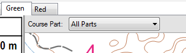
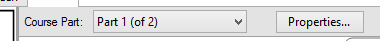
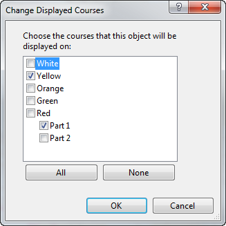

Using Map Exchanges
Once you add a map exchange to a course, the course now has multiple parts to it. A new bar appears above the course display:

At first, the course is displayed with all parts of the course visible. If you wish to see only a single part of the course, click on the map exchange bar and select only a single part:

In this mode, only one of the parts of the course is visible, and the course is displayed just like the competitors will see it. You can edit controls or other objects on the map in either mode. Click the "Properties..." button to display properties for this specific part.
Important Note: You can only view or place control descriptions on the map when viewing a single part. You cannot place control descriptions when "All Parts" is being viewed.
When choosing which courses an item such as control descriptions or a water location is displayed on (using the Item/Change Displayed Courses command), you can chose which parts of a course that the item is displayed on:

This can be useful, for example, if you wish control descriptions to be in the same place on all parts of a course. Place the control descriptions on one part, select Item/Change Displayed Courses, then select all parts of the course.